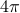

Week 1: Variables, storing data, and simple plots
This assignment is due on Tuesday, Sept. 29th, at 9:30am
(1) Getting MATLAB
The first major assignment you have for this week is to get your hands on a copy of Matlab! You can see instructions on how to do so here. We strongly recommend having a local copy of Matlab installed, as it will be much easier and faster to do your analysis on your local machine rather than accessing Matlab over the network.
If you anticipate any problems or trouble getting access to Matlab, please let the instructors know as soon as possible. We will assume going forward that you have access to Matlab.
(2) Familiarize yourself with the Matlab environment and the command line
Take note of the various windows: command line, workspace, and command history.
Get used to some of the commands we used in class: ls, cd, clc, clear, linspace, the color operator, and basic arithmetic
Check out the different plotting options (specifically, note the different colors and markers available) by use the command line help function: help plot
(3) Run a script and email in the resulting figure
Download this .m file:
Assignment 1 File
Put it in a directory that you'll be using for assignments in this class.
Run the script by typing ihaveMATLAB in the MATLAB command line. You'll need to make sure the directory containing this file is on your MATLAB path (use the Set Path button under the Home tab)
Save the resulting figure as a .fig file and include it in your homework submission.
(4) Make plots of the following functions:
for values of
 ranging from 0 to 10. Use a color other than blue or black for the line.
ranging from 0 to 10. Use a color other than blue or black for the line.using 100 linearly spaced points from 0 to  (use the linspace command, and make sure to use element-wise multiplication .*)
Note: you can save plots by clicking the save icon in the plot window. Save them as a JPG or PNG to import them into other programs.
(5) Answer the following questions:
What will be the value of y if you run the following block of code?
x = [2 5 7 9]; y = x; y = 5;
How many arguments are required for the linspace function?
Learn about one of the following functions by reading the documentation (run doc command or help command) and explain what it does and what arguments it requires (you only need to pick one): min, max, bar, abs.
What will the following piece of code do? You can assume that x is some array (row vector) of numbers.
y = (x-min(x))./max(x)
Submission
You only need to submit the file from problem 3 and your work for problems 4 and 5. Just make a short document with your plots from question (4) and your answers from question (5). Email this document (preferrably in a PDF format) to the staff mailing list (nens230@gmail.com) with [Assignment 1] in the subject line. Attach the .fig from Question 3 to this email.